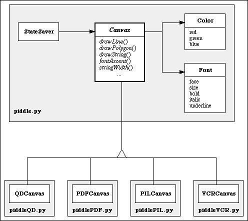
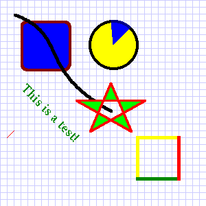

| ABSTRACT |
|---|
| A new open-source drawing library has been written in pure Python. It is called PIDDLE, an acronym for "Plug-In Drawing, Does Little Else." The name refers to two of PIDDLE's distinguishing features. First, PIDDLE only handles drawing; it does not attempt to do page layout, GUI elements such as menus or buttons, persistent graphics objects, or the like. Instead, it provides a simple API for drawing lines, curves, polygons, figures, and text. Second, PIDDLE uses "plug-in" backend renderers to do the actual drawing, and these renderers may also be portable or make use of platform-specific features. A backend may generate graphics interactively in a window, write to a file, or draw to internal buffers. Backends included with the standard PIDDLE distribution include PDF, PostScript, MacOS QuickDraw, Python Imaging Library, and others. Use of the common PIDDLE API allows a Python program to draw in an interactive window, write to a pixel-based file format such as PNG, or generate a publication-quality PDF or EPS file with exactly the same user code. Because the API was kept simple, it is fairly straightforward to write new backends; backends being developed by various authors include OpenGL, wxPython, Windows, and Adobe Illustrator. We believe that PIDDLE fills an important niche in Python's toolset, and expect it to become a standard for low-level, portable drawing operations. |
But to a large extent, this portability breaks down when graphics are involved. Unlike newer languages such as Java, Python has no standard GUI toolkit or drawing API. A variety of graphics solutions are available, such as Tk, the Python Imaging Library, and various platform APIs (e.g., Windows, XLib, and MacOS QuickDraw). Each of these has a unique set of concepts, functions, and variables, such that code written for one cannot be used with another without extensive changes.
Backends which are complete, or nearly so, at the time of this writing include the following: PDF and Postscript for print-quality, portable graphics; QuickDraw, Tk, OpenGL, and wxPython for interactive onscreen graphics; Adobe Illustrator file format; and the Python Imaging Library for drawing to a pixel map in memory, and from there saving to the large variety of formats (such as GIF, JPEG, and PNG) supported by PIL. In addition, there is a "VCR" backend; this records all the drawing commands given it, optionally saving them to a human-readable file, and can play them back into another backend.

Figure 1. Object Modeling Technique diagram of the PIDDLE modules and classes.
The actual drawing is done by one of the specialized canvas types. The naming conventions for these are as follows: a backend which draws to "Spam" would be defined in a file called piddleSpam.py, and its specialized canvas type would be called SpamCanvas. This allows a user to import several canvas types into the same namespace. Each specialized canvas must implement all of the methods in piddle.Canvas which would otherwise raise NotImplementedError. Other methods may also be overridden if the backend rendering system offers a more efficient or better-quality implementation; e.g., a backend with built-in support for Bezier curves should use that rather than accept the default, polygon-based implementation.
In addition to Canvas, the piddle file contains several accessory classes. Color is an encapsulation of the red/green/blue color space, complete with standard arithmatic, hashing, and conversion operators; there is also a HexColor factory function (not shown) which constructs a Color from a six-digit hexadecimal string as commonly used in HTML. The piddle module also includes constants for all the standard HTML colors (e.g., "cyan", "olive", and "skyblue"), as well as a special "transparent" constant used when no drawing should be done.
Font is an encapsulation of a typeface, size, and attributes. The typeface is stored as a string or list of strings (more detail is given in section 3 below). All compliant PIDDLE backends must support at least the seven standard PIDDLE font names (times, helvetica, courier, symbol, monospaced, serif, and sansserif), and may also support other fonts.
StateSaver is a sentry class which can be used to save and restore a canvas's default line color, line width, fill color, and font.
| Drawing
drawLine drawLines drawString drawCurve drawRect drawRoundRect drawEllipse drawArc drawPolygon drawFigure drawImage |
Font Metrics
stringWidth fontHeight fontAscent fontDescent |
General
clear flush save setInfoLine |
Helpers
arcPoints curvePoints drawMultiLineString |
| Capabilities
isInteractive canUpdate |
Callbacks
onClick onOver onKey |
Table 1. Primary methods and callbacks in the PIDDLE API. Italics
indicate abstract methods -- i.e., those not implemented in the piddle.Canvas.
Two methods are provided for checking a canvas's capabilities; in particular, some canvases are interactive (e.g., drawing in a window), while others are noninteractive by their very nature (e.g., PDF). For interactive canvases, three callback functions are defined, which will be called when the user clicks in the canvas, moves the mouse over it, or presses a key while the canvas is active. Finally, there are two helper methods which are seldom needed by users.
Most of the methods in piddle.Canvas have default implementations. A minimal derived canvas need only implement the abstract methods, shown in italics in Table 1. These are four drawing methods (lines, strings, polygons, and images), plus three font metric methods. Thus, a new PIDDLE backend may be written by implementing only seven functions.
PIDDLE uses a standard graphics coordinate system, with x values starting with 0 at the left side of the canvas and increasing to the right, and y values of 0 at the top and increasing down. The unit of measure is the "point" defined as 1/72 inch, though the actual size of a point may vary (or even be undefined) on some backends. All coordinates are interpreted as floating-point values, and fractional coordinates are explicitly allowed, though some backends may round to the nearest point.
As noted before, PIDDLE uses the Red/Green/Blue (RGB) color space. Converting from Cyan/Magenta/Yellow/Black coordinates to RGB is fairly straightforward, but is not part of PIDDLE.
Use of PIDDLE may be most easily illustrated with an example. Listing 1 demonstrates a variety of drawing commands, using the simple create-draw-flush pattern. The output of this code, generated by piddleQD, is shown in Figure 2. Other backends produce very similar output.
from piddleQD import
* # change these to
whatever canvas =
QDCanvas()
# backend you want to test
canvas.defaultLineColor = Color(0.7,0.7,1.0) # (light blue)
canvas.drawLines( map(lambda i:(i*10,0,i*10,300), range(30)) )
canvas.drawLines( map(lambda i:(0,i*10,300,i*10), range(30)) )
canvas.defaultLineColor = black
canvas.drawLine(10,200, 20,190, color=red)
canvas.drawEllipse( 130,30, 200,100, fillColor=yellow, edgeWidth=4 )
canvas.drawArc( 130,30, 200,100, 45,50, fillColor=blue, edgeColor=navy, edgeWidth=4 )
canvas.defaultLineWidth = 4
canvas.drawRoundRect( 30,30, 100,100, fillColor=blue, edgeColor=maroon )
canvas.drawCurve( 20,20, 100,50, 50,100, 160,160 )
canvas.drawString("This is a test!", 30,130, Font(face="times",size=16,bold=1),
color=green, angle=-45)
polypoints = [ (160,120), (130,190), (210,145), (110,145), (190,190) ]
canvas.drawPolygon(polypoints, fillColor=lime, edgeColor=red, edgeWidth=3, closed=1)
canvas.drawRect( 200,200,260,260, edgeColor=yellow, edgeWidth=5 )
canvas.drawLine( 200,260,260,260, color=green, width=5 )
canvas.drawLine( 260,200,260,260, color=red, width=5 )
canvas.flush()
|

Figure 2. Output from Listing 1.
PIDDLE comes with a reference manual describing each drawing function, with default parameter values and example usage. The code also uses docstrings throughout, allowing users to get quick help on classes and functions interactively or via an automated tool. A number of examples (including the one above) are available via the PIDDLE web site, and the distribution comes with an interactive test program that allows one to pair any test with any standard backend. Alpha testers have found use of PIDDLE to be straightforward.
Users who wish to write portable PIDDLE code are responsible for taking care to avoid such non-standard extensions. The easiest way to test whether a piece of drawing code uses only standard PIDDLE drawing functions is to simply try it with another type of canvas. Several backends (PostScript, PDF, VCR) run on all platforms with only standard Python modules, so multiple canvas types are always available.
When possible, backend developers should code their custom canvases in such a way that the nonstandard extensions go through some sort of "bottleneck" method or object, as getImage does for PIL. This will make it far more obvious to the user when she is going beyond the standard PIDDLE API.
Naturally, many specific applications require only a one or a limited set of backends; e.g., a CGI-based application generating graphics for the web may use only piddlePIL, and never need to generate print-quality drawings. In this case, there is no reason not to use the nonstandard extensions to their fullest extent.
First, consider the Python Imaging Library. It has a simple drawing API that includes drawing of non-rotated, but not rotated, strings. The solution in this case was to create two temporary Image objects, into which the string is drawn; one in color, and the other in black for use as a mask. The images are then rotated (using another PIL built-in function), and copied to the PILCanvas image using the mask. While somewhat complex, this solution works and requires no Python extensions other than PIL itself.
MacOS QuickDraw also has no built-in support for rotated strings, and no built-in way to rotate a pixel map either. Making a compliant PIDDLE backend for QuickDraw therefore required making a compiled Python extension module for this purpose. This module is made available via the PIDDLE web site, and may be included in future distributions of MacPython. PiddleQD can be used without this extension module, but attempts to draw a rotated string will raise an exception.
A similar problem is faced by wxPython, but the difficulty here is compounded by the cross-platform nature of the backend (wxWindows). Various strategies are being investigated, but a satisfactory solution has not yet been found.
When the edges of a complex polygon cross several times, there can be regions (such as the center of the star in Figure 2 which may be considered either inside or outside the polygon, depending on the fill rule used. The two common fill rules are "even-odd" and "winding". Both are sensible rules, but unfortunately, the industry has not standardized on one or the other; for example, MacOS QuickDraw uses only even-odd filling, whereas Tk uses the winding rule. It was decided to allow this feature to vary from backend to backend.
Second, PIDDLE supports the drawing of Python Imaging Library (PIL) images on systems with PIL installed, thereby allowing the user to combine pixel-mapped and vector graphics for maximum flexibility. This is often a sticking point for new backends which emphasize vector graphics and have only limited support for pixel maps; a conversion function between PIL images and the backend pixel-map format is usually required. So far, this has not been a prohibitive difficulty for any backend.
A large part of PIDDLE's success is attributable to the simplicity of its API; by keeping the feature set small, it has been relatively easy to build, debug, and add new backends. However, a few features which did not make it into the first version of PIDDLE are so handy that they will probably be added in a future version. Foremost is clipping -- i.e., limiting the drawing to a rectangular area. Coordinate transformations (probably barring rotation) will also be considered.